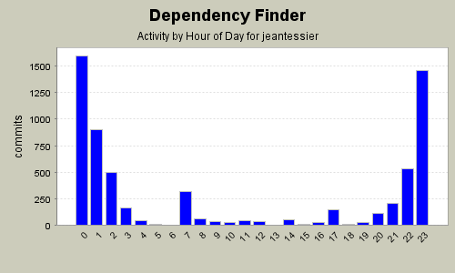
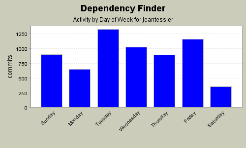

Summary Period: 2002-01-10 to 2006-01-04
6307 (97.8%)
213894 (100.0%)
| Directory | Changes | Lines of Code | Lines per Change |
|---|---|---|---|
| Totals | 6307 (100.0%) | 213894 (100.0%) | 33.9 |
| tests/com/jeantessier/dependency/ | 395 (6.3%) | 32794 (15.3%) | 83.0 |
| docs/ | 130 (2.1%) | 24612 (11.5%) | 189.3 |
| src/com/jeantessier/classreader/ | 776 (12.3%) | 19535 (9.1%) | 25.1 |
| tests/com/jeantessier/metrics/ | 352 (5.6%) | 17524 (8.2%) | 49.7 |
| src/com/jeantessier/dependency/ | 468 (7.4%) | 13991 (6.5%) | 29.8 |
| src/com/jeantessier/dependencyfinder/cli/ | 413 (6.5%) | 12774 (6.0%) | 30.9 |
| src/com/jeantessier/metrics/ | 396 (6.3%) | 12685 (5.9%) | 32.0 |
| src/com/jeantessier/dependencyfinder/gui/ | 392 (6.2%) | 11517 (5.4%) | 29.3 |
| src/com/jeantessier/diff/ | 312 (4.9%) | 9888 (4.6%) | 31.6 |
| etc/ | 323 (5.1%) | 9622 (4.5%) | 29.7 |
| tests/com/jeantessier/diff/ | 111 (1.8%) | 9463 (4.4%) | 85.2 |
| src/com/jeantessier/dependencyfinder/ant/ | 169 (2.7%) | 8476 (4.0%) | 50.1 |
| web/ | 256 (4.1%) | 6951 (3.2%) | 27.1 |
| tests/com/jeantessier/classreader/ | 194 (3.1%) | 6524 (3.1%) | 33.6 |
| bin/ | 535 (8.5%) | 3795 (1.8%) | 7.0 |
| src/com/jeantessier/commandline/ | 186 (2.9%) | 3155 (1.5%) | 16.9 |
| docs/tasks/ | 97 (1.5%) | 2745 (1.3%) | 28.2 |
| / | 144 (2.3%) | 2173 (1.0%) | 15.0 |
| tests/com/jeantessier/dependencyfinder/cli/ | 28 (0.4%) | 831 (0.4%) | 29.6 |
| src/com/jeantessier/dependencyfinder/ | 34 (0.5%) | 811 (0.4%) | 23.8 |
| lib/ | 59 (0.9%) | 770 (0.4%) | 13.0 |
| fit/tests/dependency/ | 2 (0.0%) | 364 (0.2%) | 182.0 |
| tests/JarJarDiff/new/ModifiedPackage/ | 26 (0.4%) | 284 (0.1%) | 10.9 |
| tests/JarJarDiff/old/ModifiedPackage/ | 26 (0.4%) | 281 (0.1%) | 10.8 |
| src/com/jeantessier/text/ | 6 (0.1%) | 274 (0.1%) | 45.6 |
| tests/ | 25 (0.4%) | 220 (0.1%) | 8.8 |
| fit/com/jeantessier/fit/ | 10 (0.2%) | 213 (0.1%) | 21.3 |
| tests/com/jeantessier/text/ | 8 (0.1%) | 195 (0.1%) | 24.3 |
| tests/JarJarDiff/ | 7 (0.1%) | 187 (0.1%) | 26.7 |
| tests/JarJarDiff/oldpublished/ModifiedPackage/ | 22 (0.3%) | 178 (0.1%) | 8.0 |
| tests/JarJarDiff/newpublished/ModifiedPackage/ | 22 (0.3%) | 178 (0.1%) | 8.0 |
| fit/ | 16 (0.3%) | 161 (0.1%) | 10.0 |
| fit/com/jeantessier/dependency/ | 19 (0.3%) | 147 (0.1%) | 7.7 |
| web/WEB-INF/ | 11 (0.2%) | 135 (0.1%) | 12.2 |
| tests/testpackage/ | 17 (0.3%) | 128 (0.1%) | 7.5 |
| tests/sloc/ | 10 (0.2%) | 106 (0.0%) | 10.6 |
| src/ | 12 (0.2%) | 58 (0.0%) | 4.8 |
| tests/otherpackage/ | 9 (0.1%) | 47 (0.0%) | 5.2 |
| tests/junit/runner/ | 3 (0.0%) | 28 (0.0%) | 9.3 |
| tests/JarJarDiff/old/UnmodifiedPackage/ | 2 (0.0%) | 21 (0.0%) | 10.5 |
| tests/JarJarDiff/new/UnmodifiedPackage/ | 2 (0.0%) | 21 (0.0%) | 10.5 |
| tests/JarJarDiff/oldpublished/UnmodifiedPackage/ | 4 (0.1%) | 12 (0.0%) | 3.0 |
| tests/JarJarDiff/newpublished/UnmodifiedPackage/ | 4 (0.1%) | 12 (0.0%) | 3.0 |
| tests/JarJarDiff/old/RemovedPackage/ | 1 (0.0%) | 4 (0.0%) | 4.0 |
| tests/JarJarDiff/new/NewPackage/ | 1 (0.0%) | 4 (0.0%) | 4.0 |
| web/images/ | 1 (0.0%) | 0 (0.0%) | 0.0 |
| src/com/jeantessier/metrics/doc-files/ | 4 (0.1%) | 0 (0.0%) | 0.0 |
| src/com/jeantessier/dependencyfinder/gui/icons/ | 20 (0.3%) | 0 (0.0%) | 0.0 |
| src/com/jeantessier/dependency/doc-files/ | 4 (0.1%) | 0 (0.0%) | 0.0 |
| docs/images/ | 243 (3.9%) | 0 (0.0%) | 0.0 |


Document alltests target
2 lines of code changed in:
Escape parentheses when converting node names to regular expressions in URLs
35 lines of code changed in:
Clean up trailing spaces
3 lines of code changed in:
Fix target for running all tests and speed up test class loading for diff tests
62 lines of code changed in:
Use new JAXP 1.3 constructs
120 lines of code changed in:
Use "for each" loop
4 lines of code changed in:
Remove Xalan JARs
5 lines of code changed in:
Use Java 5.0 features for autoboxing.
36 lines of code changed in:
Remove Xalan JARs, use implementation from JDK instead.
146 lines of code changed in:
Removed dead constants
2 lines of code changed in:
Include users CLASSPATH to support JarJarDiff's custom DifferenceStrategy
2 lines of code changed in:
Updated Manual section on JarJarDiff
252 lines of code changed in:
Clean the Fit output directory
33 lines of code changed in:
Fix broken CLASSPATH
3 lines of code changed in:
Simplify suite creation for Fit tests
10 lines of code changed in:
Added Fit JARs to CLASSPATH
5 lines of code changed in:
Remove bogus comment
0 lines of code changed in:
Add FitLibrary to CLASSPATH
1 lines of code changed in:
Upgrade Log4J from 1.2.8 to 1.2.13
202 lines of code changed in:
Settle initial Fit tests
387 lines of code changed in:
(667 more)
Generated by StatCVS 0.2.2
{kind=link}
{kind=link}
{kind=link}
{kind=link}
{kind=link}
{kind=link}
{kind=link}
{kind=link}
{kind=link}
{kind=link}
{kind=link}
{kind=link}